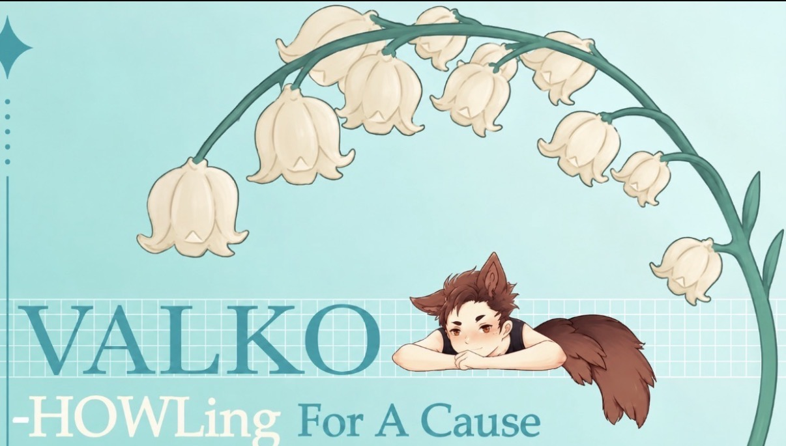
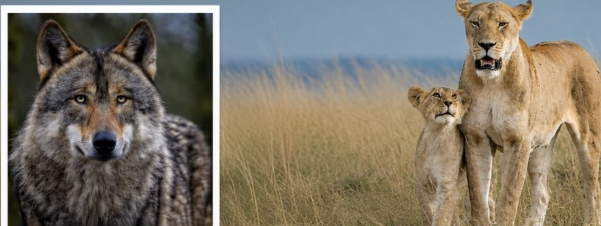
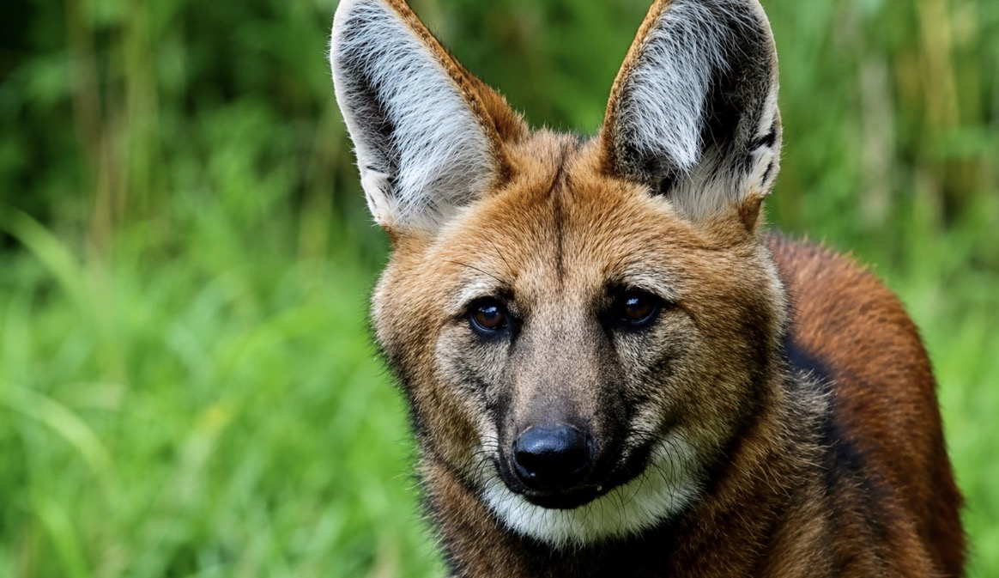
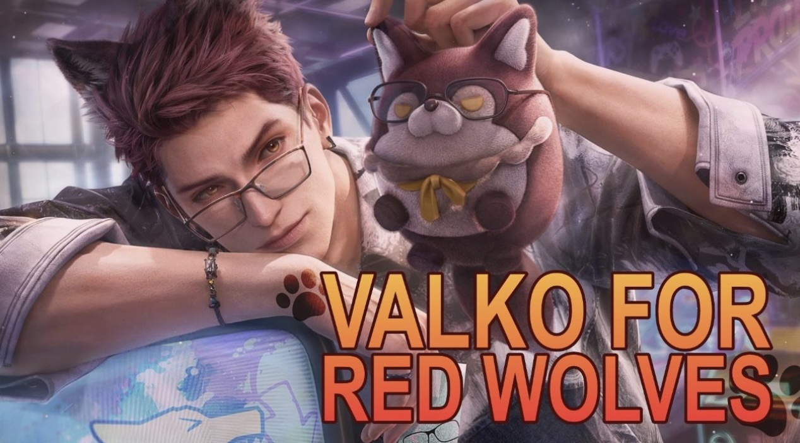
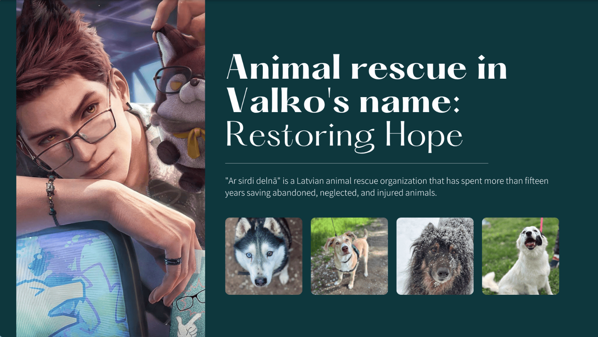
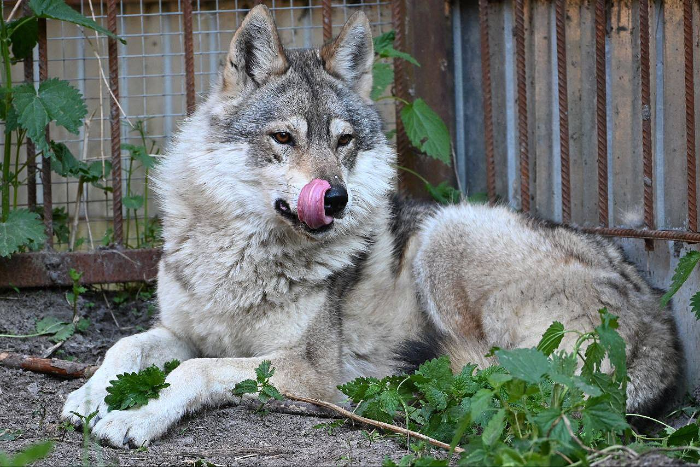
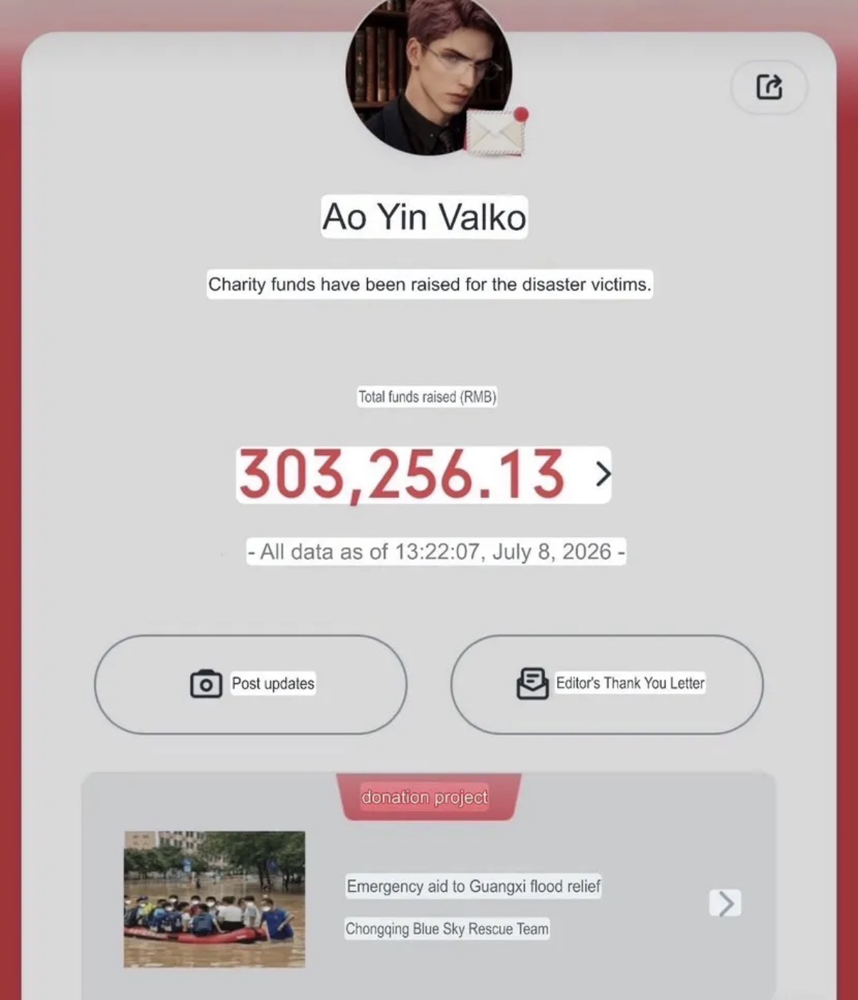
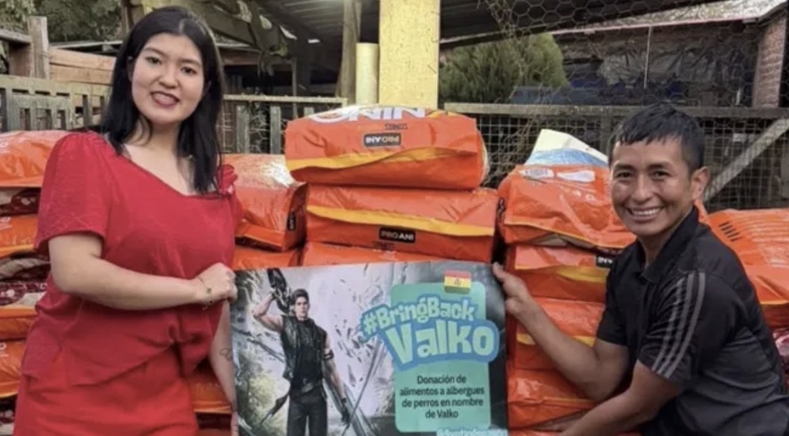
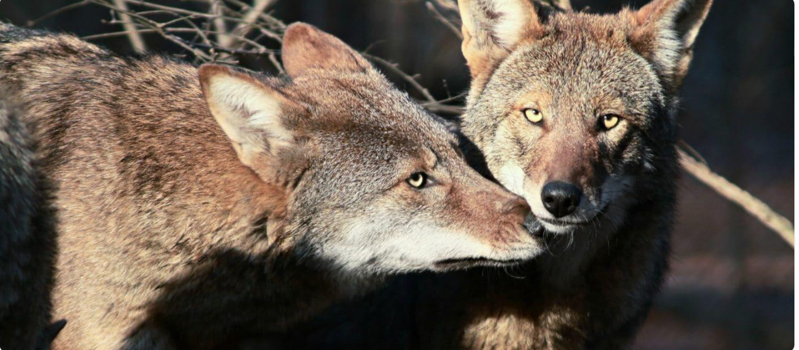
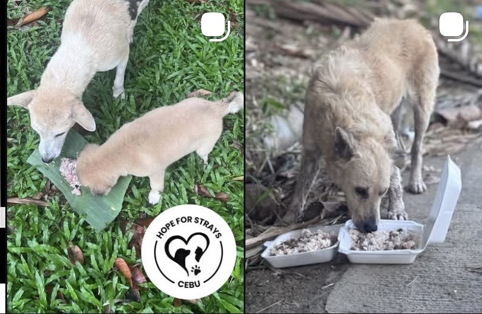

Powered by fans. Driven by purpose.
These are fundraising campaigns created by our incredible community to support causes that matter. Every donation, every share, every effort makes a real impact.
Start Your Own CampaignExplore Campaigns by Category
Browse all active community fundraising campaigns.
 Active
Active
Supporting wolf conservation efforts across Europe.
Platform: GoFundMe
 Active
Active
Raising support to help protect wolves and other wildlife in honor of Valko.
Platform: GoFundMe
 Ended
Ended
A community that fell in love with a virtual wolf now protects the real ones — supporting Mexican gray wolf conservation.
Platform: GoFundMe

ActiveSupporting Wolf Haven International, a sanctuary dedicated to wolf conservation, in honor of Valko.
Platform: GoFundMe

ActiveDonating to WWF to support the #BringBackValko movement.
Platform: WWF
Supporting Second City Canine Rescue, in honor of Valko, to give rescued dogs a second chance.
Platform: Tiltify

EndedBrazil's Love and Deepspace fandom rallies together to support Projeto Sou Amigo do Lobo, dedicated to maned wolf conservation.
Platform: Vakinha
Supporting the International Wolf Center's conservation and education work, in honor of Valko.
Platform: GoFundMe

ActiveA community of players honoring Valko's memory by supporting the Red Wolf Coalition's conservation efforts.
Platform: Mightycause

ActiveSupporting Ar sirdi delnā, a Latvian animal rescue organization that has spent over fifteen years saving abandoned and injured animals.
Platform: Donorbox
In honor of Valko, donating to the California Wolf Center, a nonprofit dedicated to wild wolf recovery and conservation.
Platform: Tiltify

ActiveA community fundraiser supporting wolf conservation and sanctuary care in Russia, in honor of Valko.
Current amount may differ
Helping Girls Who Code continue their mission of closing the gender gap in tech and building the next generation of female engineers.
Platform: GoFundMe
Organized by Jasmine Cloud for The Women's Housing Coalition, in honor of Valko, helping women find stable housing and support.
Platform: GoFundMe
Organized by Alina Sukhorska for 1736 Family Crisis Center, in honor of Valko, supporting families and individuals facing crisis.
Platform: GoFundMe
Sponsored by Meluna Nacht for Covenant House, in honor of Valko, helping youth overcome homelessness.
Platform: Covenant House
Organized by Alina Sukhorska for the American Cancer Society, in honor of Valko, supporting cancer research and patient care.
Platform: GoFundMe
Supporting Ocean Conservancy, in honor of Valko, to help protect our oceans and marine life.
Platform: Ocean Conservancy
Newly launched — be the first to support this cause!
View CampaignOrganized by Gacha Goblin, supporting Make-A-Wish's Wishmas campaign in honor of Valko.
Platform: Tiltify
Organized by Valko's Valkyries, supporting Make-A-Wish's Wishmas campaign in honor of Valko.
Platform: Tiltify

ActiveOrganized by Ao Yin Valko, supporting emergency aid to Guangxi flood relief through the Chongqing Blue Sky Rescue Team.
Current amount may differ

ActiveDonation of dog food to Refugio Angelitos de Edgar, an animal shelter in Bolivia, in honor of Valko.
Platform: Instagram

EndedOrganized by Valko Wolves and Wildlife Conservation, supporting Shan Shui Conservation Center's wolf and wildlife work in honor of Valko.
Platform: Givebutter

ActiveA community sticker fundraiser in honor of Valko, with proceeds donated directly to Hope for Strays Cebu animal shelter.
Platform: Instagram / Sticker Fundraiser